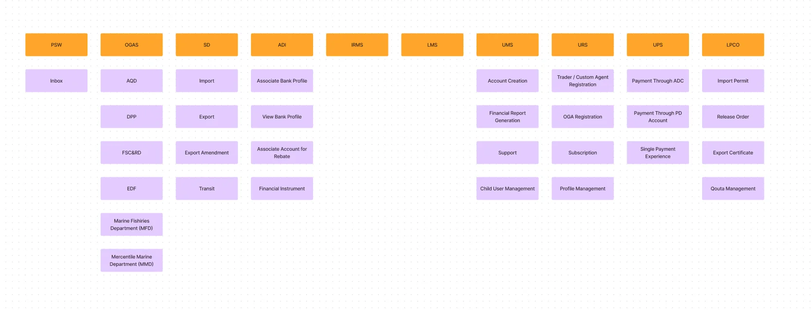
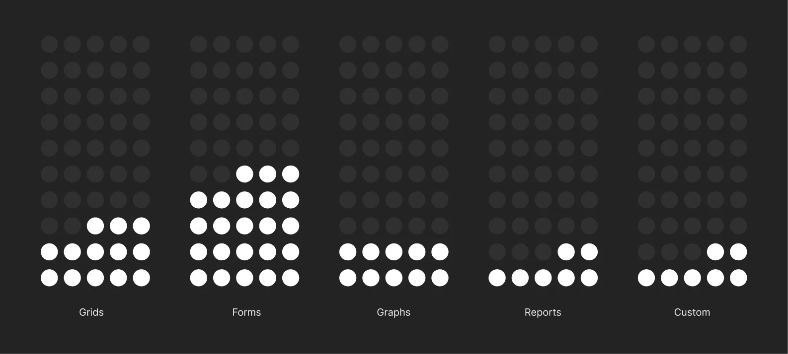
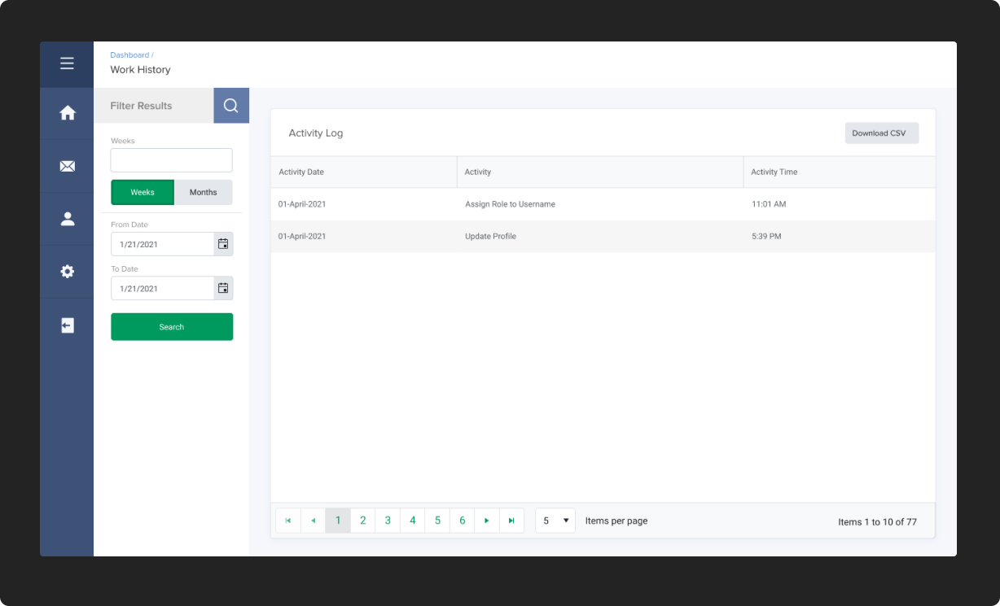
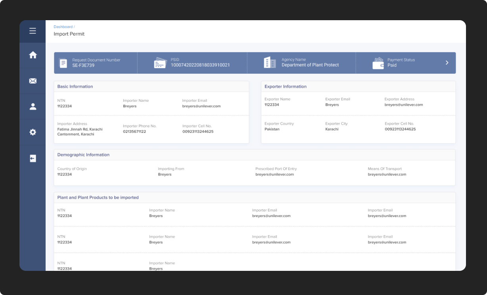
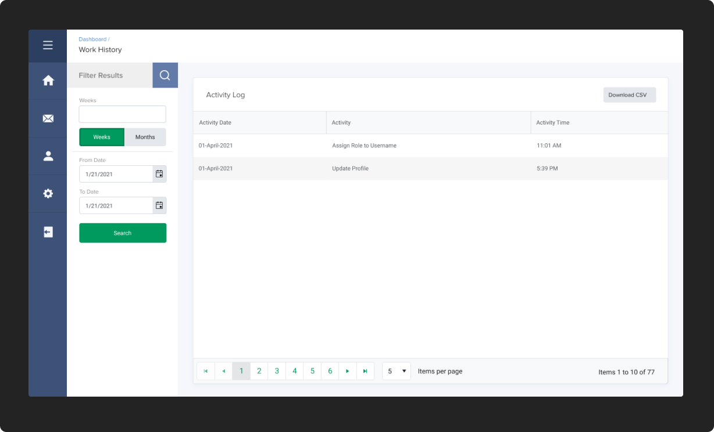
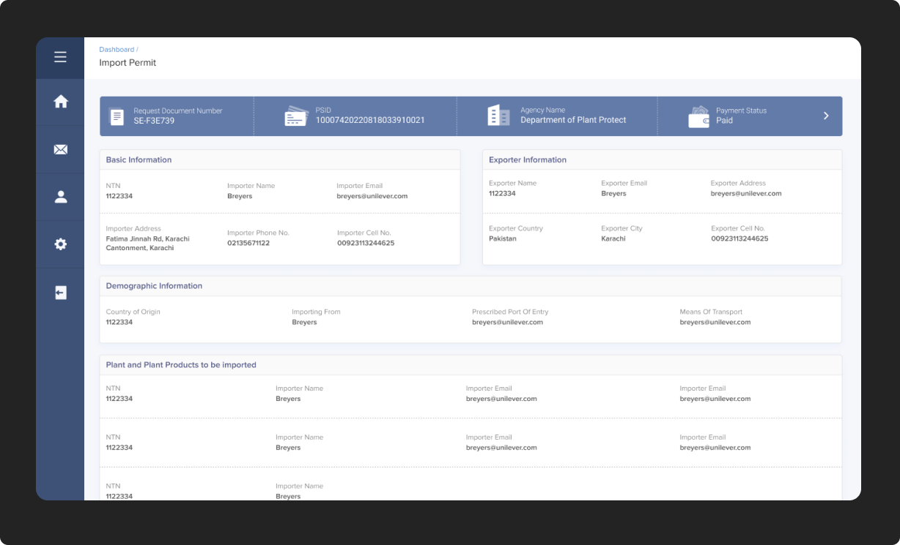
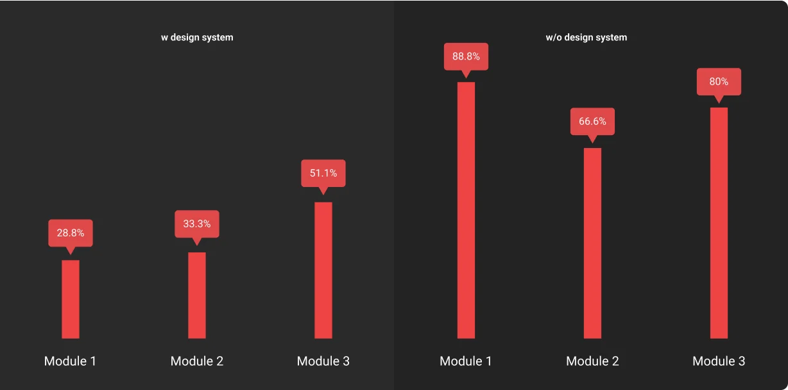

Introduction
There are more than 2824 products currently being exported to 194 countries, and 4039 products are being imported from 208 countries, making import and export a massive ecosystem that includes traders, banks, and 73 federal ministries that regulate the import and export.
Pakistan Single Window is an enterprise that set out to build a system that would improve the efficiency of Pakistan’s Trade System and digitize various government and federal ministries. It will comply with the Single Window standards of other countries and provide a single gateway for trade-related activities.
As a User Experience Engineer my goal was to design a modular system to help the team ideate and develop most of PSW's functions with ease and efficiency.
My Role
Design
Research
Deliverable
Design Proposal
Design System Assets
Design System Implementation Document
Phase 1: Identification
Why did we need a modular design system?
To provide a consistent experience across all modules and all platforms.
Since Pakistan Single Window (PSW) Portal supports multiple platforms and encompasses various functionalities, it was crucial to understand the need for a consistent experience.
To increase reusability while having room for customizations
While increasing reusability helps reduce the production time of a module, we also needed to make sure that customizations at all levels should be allowed in the system.
To reduce the time it takes for the team to ideate on newer modules
Using the design system as a tool for quick ideation became our priority goal to reduce the time to bring out new ideas, reduce design from scratch for each instance and solve the problems quicker.
Phase 2: Ideation
How did we start our journey?
Mapping the architecture
Initially, we created an information architecture to map out the main functions. This activity gave us an insight into the scale and user flows.
A structural overview of PSW's main functions
Working with Requirement Artifacts
After analyzing requirement artifacts like business requirements, and requirement traceability matrices, we improved the user flow, ensuring they align with the business and product goals.
Auditing Component Library
After understanding the scale, functions, and user flows, we audited the existing component library and mapped out the component's usage in various modules.
Survey Results: Usage of various components.
Phase 3: Outcome
The Design System
Using the concepts of the atomic design system, we started managing smaller pattern libraries while building several templates and pages.
The Visuals
Our design team created different interfaces for the product using the system created.
❮
 



❯
The Impact
A clear difference in time was observed [approx 40% average] between modules developed using our new design system and modules developed and designed from scratch.
Survey Results: Impact of modular design system on development
While measuring the impact of our newly introduced design system, we also observed a correlation between the level of system item used (e.g. atoms, molecules, etc.), the time it took to ideate on a module, and the amount of customization allowed.
This gave our team a way to be able to not only estimate and plan project timelines better but also be able to control the time and complexity relationship of each module.
Future of our Design System
Benchmarks & Testing
Our Design System provides a guideline to benchmark our ideas and test and improve the system for new cases.
Improvement and Documentation
We continue to improve the documentation and develop use cases to understand the application and help the engineering team use the system efficiently.